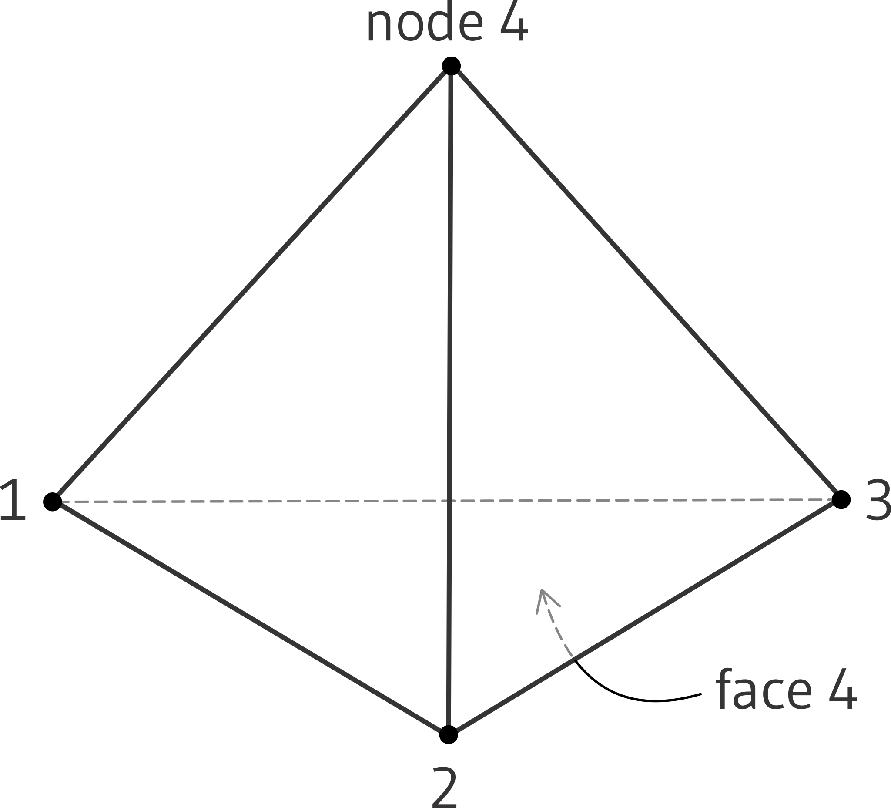
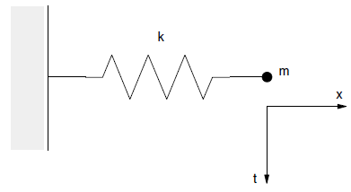
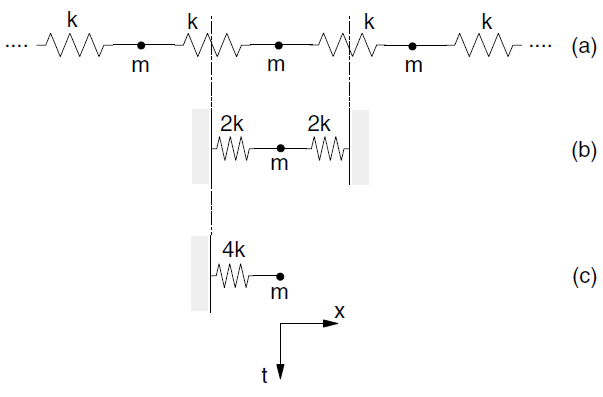
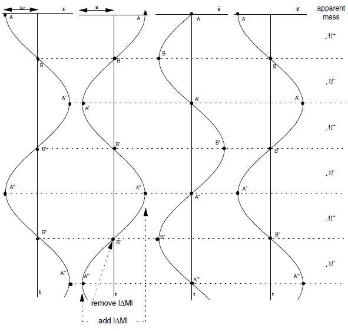
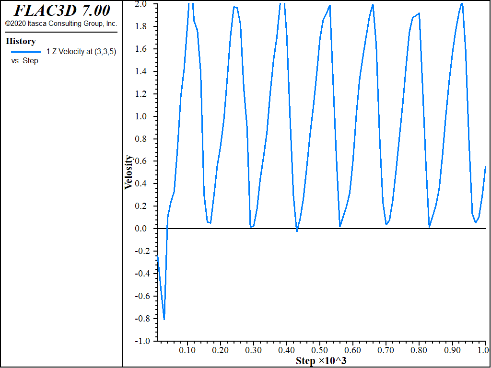
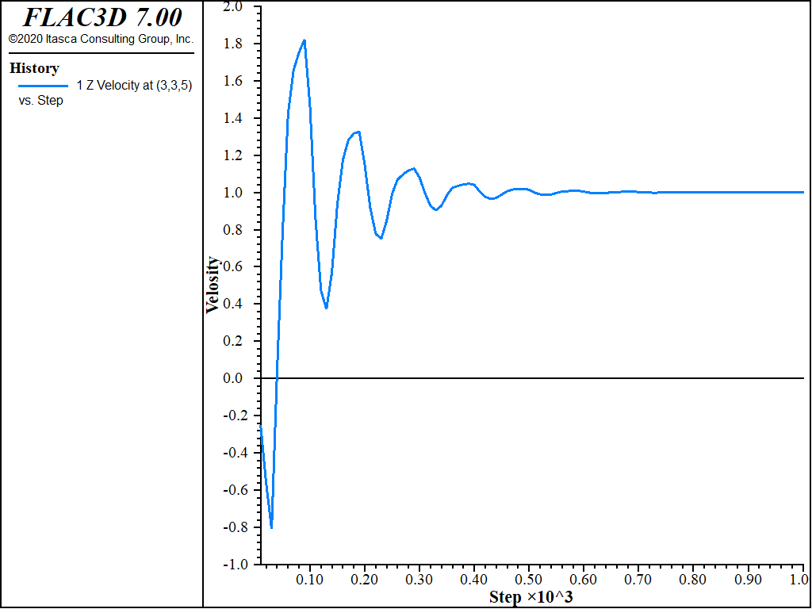

三维显式有限体积模型的公式表述
FLAC3D 是一个显式有限体积程序，用于数值研究连续三维介质在达到平衡或稳定塑性流动时的力学行为。所观测到的响应一方面来自特定的数学模型，另一方面来自特定的数值实现。下面讨论这两个主题。
数学模型说明
介质的力学由一般原理（应变定义、运动定律）以及定义理想化材料的本构方程导出。所得的数学表达式是一组偏微分方程，将力学变量（应力）与运动学变量（应变率、速度）联系起来，需要在给定特定边界条件和初始条件下针对特定几何和性质进行求解。
该模型的一个重要方面是包含运动方程，尽管 FLAC3D 主要关注介质在接近平衡状态时的应力和变形状态。数值实现部分表明，惯性项被用作以数值稳定方式达到平衡状态的手段。
约定
在 FLAC3D 所采用的拉格朗日公式表述中， 介质中的一点分别由位置、位移、速度和加速度的矢量分量 \(x_i\)、\(u_i\) 和 \(dv_i\) \(/\ dt\)，\(i\) = 1,3 来表征。
作为记号约定，粗体字母表示矢量或张量，具体取决于上下文。 符号 \(a_i\) 表示矢量 [\(a\)] 在笛卡尔参考坐标系中的分量 \(i\)；\(A_{ij}\) 是张量 [\(A\)] 的分量（\(i,j\) ）。 此外，\(α_i\) 是 \(α\) 对 \(x_i\) 的偏导数。 （\(α\) 可以是标量变量、矢量或张量分量。）
按定义，拉力和伸长为正。
适用爱因斯坦求和约定，但仅对取值为 1、2、3 的指标 \(i\)、\(j\) 和 \(k\) 适用。
应力
介质中给定点的应力状态由对称应力张量 \(σ_{ij}\) 表征。 单位法向为 [\(n\)] 的面上的面力矢量 [\(t\)] 由 Cauchy 公式给出（拉力为正）：
应变率与旋转率
设介质质点以速度 [\(v\)] 运动。 在无限小时间 \(dt\) 内，介质经历由平移 \(v_i\)\(dt\) 确定的无限小应变， 应变率张量的相应分量可写为
其中偏导数是对当前位置矢量 [\(x\)] 的分量取的。
为备后用，应变率张量的第一不变量给出了单元体积剪胀率的量度。 除由张量 \(ξ\)\(ij\) 表征的变形率外， 体积单元还经历由平移速度 [\(v\)] 确定的瞬时刚体位移， 以及以角速度进行的旋转。
其中 \(e_{ijk}\) 为置换符号，[\(ω\)] 为旋转率张量，其分量定义为
运动方程与平衡
应用动量原理的连续介质形式，可得 Cauchy 运动方程：
其中 \(ρ\) 为介质的单位体积质量，[\(b\)] 为单位质量体力， 而 \(d\)[\(v\)]/\(dt\) 为速度的材料导数。 在数学模型中，这些定律由作用于介质单元体积上的力决定其运动。 请注意，在介质处于静力平衡的情况下， 加速度 \(d\)[\(v\)]/\(dt\) 为零， 方程(5)简化为平衡的偏微分方程：
边界条件和初始条件
边界条件由施加的边界面力 （见方程(1)）和/或速度（以引起给定位移）组成。 此外，可能存在体力。 另外，还需要指定物体的初始应力状态。
本构方程
运动方程(5) 连同应变率的定义（方程(2)） 构成九个方程，含十五个未知量 （应力张量和应变率张量的 6 + 6 个分量以及速度矢量的三个分量）。 本构方程提供另外六个关系式， 用以定义所考虑特定材料的性质。 它们通常给出为如下形式
其中 \([\check \sigma]\) 为共旋应力率张量， [\(H\)] 为给定函数，\(κ\) 为考虑加载历史的参数。 共旋应力率 \([\check \sigma]\) 等于应力的材料导数， 其形式如同随材料点固连并随之以等于材料角速度 [\(Ω\)] 瞬时值的角速度旋转的参考系中的观察者所见。 其分量定义为
其中 \(dσ_{ij}\)/\(dt\) 为 [\(σ\)] 的材料时间导数，[\(ω\)] 为旋转率张量。
数值公式
FLAC3D 中的求解方法由以下三种途径来表征：
- 有限体积途径（变量的空间一阶导数和时间一阶导数由有限体积近似，假定变量分别在有限空间间隔和有限时间间隔内呈线性变化。）；
- 离散模型途径（连续介质由离散等效体代替—— 其中所有涉及的力（施加力和相互作用力）均集中在用于表示介质的三维网格的节点上。）；以及
- 动力求解途径（运动方程中的惯性项被用作数值手段，以达到所考虑系统的平衡状态。）
借助这些途径，连续介质的运动定律被转换为节点处牛顿定律的离散形式。 所得的常微分方程组随后在时间上采用显式有限差分方法进行数值求解。
在推导等效介质时涉及的空间导数是那些出现在以速度表示的应变率定义中的导数。 为定义速度变化及相应的空间间隔， 介质被离散为四面体形状的常应变率单元， 其顶点即为上述网格的节点。 图 1（Figure 1） 示例性地给出了一个四面体：

图 1：四面体
空间导数的有限体积近似
下面推导四面体应变率张量分量的有限体积公式表述，作为运动方程节点公式表述的准备。 四面体的节点在局部用 1 至 4 编号，且按惯例，面 \(n\) 与节点 \(n\) 相对。 （见图 1（Figure 1）。）
对四面体应用高斯散度定理，可写为
其中积分分别取在四面体的体积和表面上， [\(n\)] 为垂直于表面的外法向单位矢量。
对于常应变率四面体，速度场为线性，[\(n\)] 在每个面的表面上为常量。 因此，积分后方程(9)给出
其中上标（\(f\)）表示相应变量在面 \(f\) 上的值， \({\overline{v_i}}\) 为速度分量 \(i\) 的平均值。 对于线性速度变化，有
其中上标 \(l\) 表示节点 \(l\) 处的值。
如果在方程(9)中用 1 替换 \(v_i\)，则由散度定理可得
利用最后这个关系式，并将方程(12)除以 \(V\)，得到
而应变率张量的分量可表示为
运动方程的节点公式表述
下面通过对任一时刻的等效静力问题应用虚功定理，推导运动方程的节点公式表述。 对节点惯性项形式的近似做法是，将这些项用作达到平衡方程（方程(6)）对应解的手段。
固定时间 \(t\)，我们考虑一个等效静力问题，其在任一时刻由平衡方程控制
其中体力定义为（方程(5)）
在本文所采用的有限体积近似框架下， 介质由承受体力 \([B]\) 的常应变四面体连续集合来表示。 作用于单个四面体、并与其应力和等效体力处于“静力”平衡的节点力 \([f]^n\)（其中 \(n\) = (1,4)） 通过应用虚功定理导出。 在施加虚节点速度 \(δ[v]^n\) 之后 （它将在四面体内部产生线性速度场 \(δ[v]\) 和常应变率 \(δ[ξ]\)）， 令节点力 \([f]^n\) 和体力 \([B]\) 所做外功率 等于应力 \(σ_{ij}\) 在该速度下所做内功率。
按照 约定（conventions） 中的记号 （上标表示变量的节点值） 以及关于指标 \(i\) 和 \(j\) 的爱因斯坦求和约定， 外功率可表示为
而内功率由下式给出
利用方程(15)，对于常应变率四面体可写为
应力张量是对称的，定义分量为下式的矢量 \(T^l\)
可得
其中 \(E^b\) 和 \(E^I\) 分别为体力 \(ρb_i\) 和惯性力的外功率贡献。 对于四面体内的常量体力 \(ρb_i\)，可写为
而 \(E^I\) 可表示为
根据前面所作的有限体积近似，速度场在四面体内部呈线性变化。 为描述它，我们采用局部参考坐标系 \(xʹ\)1、\(xʹ\)2、\(xʹ\)3， 原点位于四面体质心，并写出
其中 \(N^n\)（\(n\) = 1,4）为如下形式的线性函数
而 \(c^n_0\)、\(c^n_1\)、\(c^n_2\)、\(c^n_3\)（其中 \(n\) = 1,4） 是通过求解方程组确定的常数
其中 \(δ_{nj}\) 为 Kronecker delta。 按质心的定义， 所有形如 \(\int_V {x'}_j dV\) 的积分均为零， 将方程(26)代入方程(24)中的 \(δv_i\)， 并利用方程(27)可得，
利用 Cramer 法则由方程(28)求解 \(c^n_0\)， 并利用质心的性质，可得
此外，将方程(26)代入方程(25)中的 \(δv_i\) 可得
最后，将 \(E^b\) 的表达式方程(31) 和 \(E^I\) 的方程(32)代入， 方程(23)变为
在等效问题的框架下，为使四面体处于静力平衡，内功率 （见方程(22)）应等于方程(33)所表示的外功率，且对任意虚速度均成立。 因此，重新整理各项后必有
当四面体内加速度场围绕平均值的空间变化较小时， 方程(34)中的最后一项可表示为
此外，当四面体内 \(ρ\) 为常量时，利用上述质心性质 （见方程(27)和(30)）可写出
在本分析的语境下，上述惯性项中涉及的质量 \(ρV\)/4 由虚拟节点质量 \(m^n\) 代替， 其值将在下面确定，以确保系统在趋于平衡过程中数值稳定。 因此，方程(36)变为
而方程(34)可写为
等效系统的平衡条件现在可通过要求以下条件成立来建立：在每个节点处， 所有贡献四面体的静力等效力 -[\(f\)] 与施加荷载和集中力的节点贡献 [\(P\)] 之和为零。 为表达这些条件，我们采用一种记号，其中带上标 <\(l\)> 的变量 表示该变量在全局节点编号中标号为 \(l\) 的节点处的值。 符号 [[.]]\(^{<l>}\) 用于表示在该节点相交的所有四面体在全局节点 \(l\) 处贡献之和。 按这些约定，可写出节点处牛顿定律的如下表达式：
其中 \(n_n\) 为介质表示中涉及的总节点数，节点质量 \(M^{<l>}\) 定义为
而不平衡力 \([F]^{<l>}\) 由下式给出
当介质达到平衡时，该力等于零。
时间导数的显式有限差分近似
考虑本构方程（方程(7)） 以及变形率与节点速度之间的关系式（方程(15)）， 方程(39)可形式地表示为如下形式的常微分方程组
其中记号 {}\(^{<l>}\) 表示全局节点 \(l\) 处计算中所涉及的节点速度值的子集 （见方程(39)） 在 FLAC3D 中，该方程组采用时间上的显式有限差分公式表述进行数值求解。在这种方法中， 假定材料节点的速度在时间间隔 \(Δt\) 内线性变化， 方程(42)左端的导数用中心有限差分计算， 因此速度存储的时刻相对于位移和力偏移半个时步。 节点速度用以下递推关系计算
相应地，节点位置也用中心有限差分近似以类似方式更新，
当采用方程(43)和(44)所体现的有限差分格式时，一阶误差项消失 （即该格式具有二阶精度）。
程序中节点位移由以下关系计算
其中 \(u_i^{<l>}(0) =0\)。
增量形式的本构方程
在 FLAC3D 中，假定速度在时间间隔 \(Δt\) 内保持不变。 采用本构方程(7)的如下增量表达式：
其中 \(\Delta \check\sigma_{ij}\) 为共旋应力增量， \(H^*_{ij}\) 为给定函数。
对于 \(Δt\) 期间的小位移和小位移梯度，可写出
其中 \(Δ_{ij}\) 为与时刻 \(t\) 的构形相关的应变变化。
应力增量 \(Δσ_{ij}\) 由 \(\Delta{\check{\sigma}}_{ij}\) 计算，使用
其中 \(Δσ^C_{ij}\) 为定义的应力修正 （见方程(8)）
旋转率张量的分量使用方程(4) 和有限差分公式表述方程(14)计算：
本构函数 \(H^*\) 的具体形式在 本构模型（Constitutive Models） 中描述， 其中还讨论了它们在 FLAC3D 中的数值实现问题。
大应变模式与小应变模式
上述数值公式表述可描述大应变变形，涉及大位移、大位移梯度和大旋转。 在 FLAC3D 中这被称为大应变模式。
在旋转足够小、以致分量 \(ω_{ij}\) - \(δ_{ij}\) 相对于 1 很小的应用中， [\(ω\)] 可由 [\(I\)] 代替， 方程(48)中的应力修正可以略去。 此外，对于小位移和小位移梯度， 应变率张量定义式方程(2)中涉及的空间导数 可相对于初始构形计算， 且节点坐标无需更新（见方程(44)）。
在 FLAC3D 中，小应变模式假定位移、位移梯度和旋转均为小量。 在该模式中，节点坐标不更新，也不考虑应力旋转修正。
为数值稳定而确定力学时步
除非数值格式稳定，否则差分方程（方程(43)）不会给出有效答案。 通过将理想化介质视为由线性弹簧连接的集中质量（位于节点处）集合，可以获得关于此问题的一些物理认识， 这一概念化可基于以下理由作出。质量-弹簧系统的运动方程可用矩阵记号表示为
其中花括号表示节点值矢量，{\(P*\)} 为外力，[\(K\)] 为弹簧刚度矩阵， 而 [\(M\) ] 为对角节点质量矩阵。 如果将方程(39)中的不平衡力解释为方程(51)中的施加力和弹簧反力， 与理想化介质的类比就是直接的。
用有限差分格式研究振动的质量-弹簧系统时， 所用时步不得超过与整个系统最小特征周期相关的临界时步。 因此，数值格式的稳定准则必须为有限差分格式中所用时步的取值提供上限。
要推导出给出系统临界时步量度的关系式，需要了解系统的特征周期。 然而在实践中，整体特征值分析不切实际，通常也不用于此目的 （见 Press 等 1986）。在 FLAC3D 中，如下文所示，执行的是这一稳定性分析的局部化变体。 该数值方法的一个重要方面是，对整个系统采用统一的单位时步 \(Δt\)：
而方程(39)右端的节点质量被视为变量， 并加以调整以满足局部稳定条件。


图 2：质量-弹簧系统 1。
首先，考虑图 2（Figure 2）所示的一维质量-弹簧系统。 具有给定初始位移的集中质量的运动由以下微分方程控制
其中 \(k\) 为弹簧刚度，\(m\) 为集中质量。 该方程的二阶有限差分格式所对应的临界时步由下式给出（Bathe and Wilson 1976）：
其中 \(T\) 为系统的周期——即
[CS：此处发现这段代码片段，不明原因。暂（隐藏）保留在原处，直至弄清原因：：简短占位。此处为理论部分第 1.2 节（及小节）。]


图 3：质量-弹簧系统 2。
现在考虑图 2（Figure 2）-a 中无限系列的质量和弹簧。 由对称性，可通过研究图 2（Figure 2）-b 中所示的系统来分析该集合的行为， 该系统又等效于刚度为 4\(k\) 的单个质量-弹簧系统 （图 2（Figure 2）-c） 由方程(54)和(55)导出的极限稳定准则 具有如下形式
取 \(Δt\) = 1 时，如果集中质量的大小大于或等于弹簧刚度，系统将稳定。在局部分析中， 通过将 \(m\) 解释为局部节点 \(l\) 处的节点质量贡献 \(m^l\)， 并将 \(k\) 解释为相应的节点刚度贡献 \(k^l\)，(56)的有效性被推广到一个四面体。 由无限系列准则导出的节点质量贡献为所考虑的系统提供了上限值。 节点刚度贡献按下述局部刚度矩阵的简单对角化技术导出。
局部节点 \(l\) 处的四面体内力贡献等于 \(T^l_{i}\)/3 （见方程(41)） 该力被解释为形如 \(-k^l_{ij}\)\(u^l_{j}\) 的弹簧反力 （见方程(51)） 在一个时间间隔 \(dt\) 上取变分，可写出
利用(21)，该关系式变为
当节点 \(l\) 处沿方向 \(q\) 的速度分量为单位值、 其余所有节点速度分量均为零时，由方程(58)可得 局部刚度矩阵的对角项
其中按惯例，对取 1 至 3 的重复指标 \(q\) 不进行求和。
采用 Hooke 定律的小应变增量形式来描述小时段内的应力-应变本构关系，可写出
其中 \(α\)1 = \(K\) + 4/3\(G\)，\(K\) 为体积模量，\(G\) 为剪切模量。
将所选的节点速度值代入关于 \(ξ\) 的有限差分公式表述方程(15)，可得
将该表达式代入方程(60)可得
现在我们定义节点刚度贡献的上限值为
由方程(56)和方程(52)可得 节点 \(l\) 处四面体质量贡献的表达式：
以提供数值稳定的解。
力学阻尼
运动方程必须加以阻尼，以提供静力或准静力（非惯性）解。
局部非黏性阻尼是 FLAC3D 中静力分析的默认阻尼算法，
本节对此进行描述。
局部阻尼可使用 单元力学阻尼局部（zone mechanical damping local） <f> 命令控制，
其中 f 为局部阻尼（默认值为 0.8）。
局部阻尼也可在动力分析中实现
（见 动力分析（Dynamic Analysis） 一节）。
FLAC3D 中提供了另一种阻尼算法，用于稳态解包含显著均匀运动的情形。
例如，这可能出现在蠕变模拟中，或出现在计算轴向受荷桩极限承载力时。
该阻尼称为组合阻尼，本节也对其进行描述。
在这种特殊情况下，组合阻尼在消除动能方面比局部阻尼更高效。
组合阻尼使用 单元力学组合阻尼命令（zone mechanical damping combined） <f> 命令调用。
对于动力分析，还可使用Rayleigh 阻尼和人工黏性阻尼来控制阻尼。 这些算法在理论与背景部分的 力学阻尼（Mechanical Damping） 一节中描述。
局部非黏性阻尼
FLAC3D 中使用的局部非黏性阻尼与 Cundall（1987）中所述的类似。 在方程(39)给出的运动方程中增加一个阻尼力项， 使阻尼后的运动方程可写为
\(\mathcal{F}_{(i)}^{<l>}\) 为阻尼力，由下式给出
以广义不平衡力 \(F^{<l>}_i\) 和广义速度 \(v^{<l>}_{(i)}\) 表示。 阻尼力由阻尼常数 \(α\) 控制，其默认值为 0.8。
这种形式的阻尼有三个优点：
- 只有加速运动才被阻尼；因此，稳态运动不会产生错误的阻尼力。
- 阻尼常数 \(α\) 是无量纲的。
- 由于阻尼与频率无关，集合中具有不同自振周期的区域使用同一阻尼常数而被同等阻尼。
FLAC3D 中的局部非黏性阻尼公式表述类似于滞回阻尼， 其中每循环的能量损失与循环执行的速率无关。 下面的分析说明了这种相似性。
考察方程(66)可以看出，阻尼力总是阻止运动， 但它按合广义力缩放， 而不像黏性阻尼那样按速度大小缩放。 根据 \(F_i^{<l>}\) 和 \(v_{(i)}^{<l>}\) 的相对符号， 方程(66)可写成两种形式。 当二者符号相同时，运动方程为
而当二者符号相反时，运动方程为
这些方程可用表观质量表示为
其中 \(\mathcal{M}^+ = {M^{<l>} / (1-\alpha)}\) 和 \(\mathcal{M}^- = {M^{<l>} / (1+\alpha)}\)。


图 4：单质量-弹簧系统的运动。
图 2（Figure 2）中单自由度质量-弹簧系统的运动（给定初始位移使其在 \(t\) = 0 时 \(x = a\)）如图 4（Figure 4）所示。 对于这种运动，表观质量在每个循环中速度为零的两个时刻增加，在速度最大的两个时刻减小。 阻尼的作用方式是每循环两次移除动能：在两个速度峰值点处，一部分运动质量被移除并舍弃。 请注意，加速度没有不连续，因为在移除质量的瞬间加速度为零。
每循环移除的能量由点 \(B\) 处动能降量的两倍给出，即
而移除瞬间的平均动能为
其中 \(v_{(i)}^{<l>}\) 为方程(66)给出的广义速度。
每循环损失的能量与最大储能之比称为“比损耗”（Kolsky 1963）。 通过注意到对于单自由度系统或单模态振动，峰值动能与峰值储能相同， 比损耗可以用 FLAC3D 中的阻尼常数表示。 因此，比损耗可写为
对于小阻尼值，临界阻尼比 \(D\) 可用比损耗表示为
对于默认值 \(α\) = 0.8，临界阻尼比的近似值因此为 0.25。
方程(72)可通过分别对一个网格单元和由三个网格单元组成的柱体突然施加重力荷载、 并让每个系统振动至平衡来验证。 两种试验给出的 \(Δ W/W\) 值大致相同，证实阻尼与频率无关。 然而，对于多个模态同时参与的系统， 由 FLAC3D 计算的响应可能不会对每个模态显示出相同的阻尼。
组合阻尼
方程(66)所述的阻尼公式表述仅在速度分量改变符号时才被激活。 在存在显著均匀运动（与需要阻尼的振动幅值相比）的情况下， 可能不存在“过零点”，因而没有能量耗散。 通过注意到对于作简谐运动的单自由度系统，不平衡力的导数与负速度成正比， 可导出一种替代的（但效率较低的）公式表述。如果
then
因此 \({d F \over dt}\) 与 \(v\) 成正比。 然而对于振动系统，即使 \(v\) 的平均值非零，\({d F \over dt}\) 的平均值也为零。 FLAC3D 中提供了称为“组合阻尼”的另一种阻尼形式。 该格式的阻尼力由基于速度和 \({d F \over dt}\) 的表达式各贡献一半组成：
如果系统中除需要耗散的振动运动外还存在显著的刚体运动，则应使用这种形式的阻尼。 然而，发现组合阻尼耗散能量的速率比基于速度的局部阻尼慢。 因此，在大多数情况下优先采用局部阻尼。
刚体运动的影响在 ElasticBlock.dat 中演示， 该文件模拟重力作用下的一个块体。 相应的项目文件为 “ElasticBlock.f3prj”，位于 “datafiles\theory\elastic-block” 中。 不过，下边界被约束为以恒定速度向上运动， 且所有网格点在水平方向均被固定。 最终的“平衡”状态应是重力引起的应力作用于物体中， 此外所有网格点应以相同速度向上运动。 从某一顶面网格点的速度历史（如图 5（Figure 5）所示）可以看出， 物体持续无限振动，未达到预期的稳态。
ElasticBlock.dat
model new
model large-strain off
fish automatic-create off
zone create brick size 5 5 5
zone cmodel elastic
zone property shear 1 bulk 2
zone initialize density 1
model gravity 0 0 -10
zone gridpoint fix velocity-x
zone gridpoint fix velocity-y
zone gridpoint fix velocity range position-z 0
zone gridpoint initialize velocity-z 1.0
history interval 10
zone history velocity-z position 3 3 5
model save 'ini'
;
model step 1000
model save 'undamped'
;
model restore 'ini'
zone mechanical damping combined
model step 1000
model save 'damped'
;


图 5：块体顶部 z 方向速度历史——局部阻尼。
当指定 单元力学组合阻尼命令（zone mechanical damping combined） 命令时，
系统随后收敛到所有速度均等于施加速度的稳态
（见图 6（Figure 6）），
且内部应力呈现与静力情形相同的重力梯度。


图 6：块体顶部 z 方向速度历史——组合阻尼。
| 这些内容对您有帮助吗？… | FLAC3D © 2019, Itasca | 原文更新于 2020 年 10 月 8 日 |